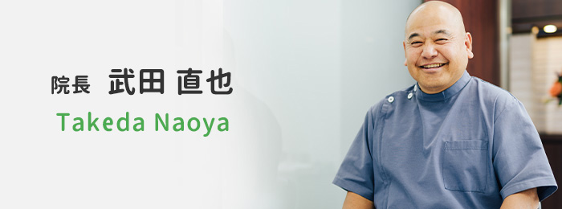
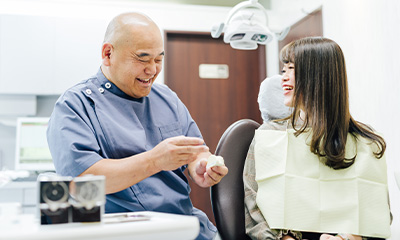
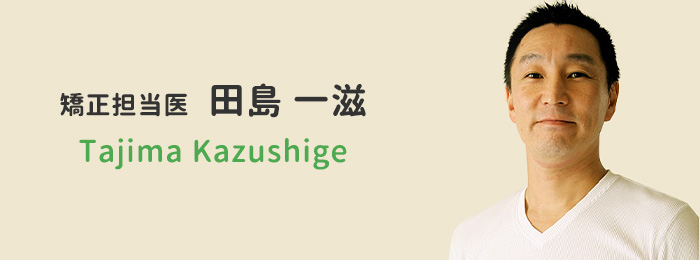
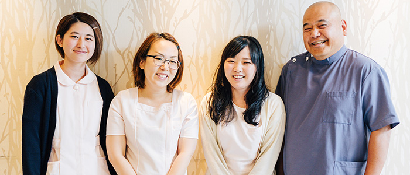

- 立川の歯医者「たけだなおや歯科クリニック」TOP
- スタッフ紹介
保険診療を中心に、予防重視の歯科医療を提供する「たけだなおや歯科クリニック」。立川駅から歩いて5分の場所にある通いやすい歯医者です。こちらでは当院で患者さんのお口のケアをサポートする院長・スタッフをご紹介します。
すべての治療に、最初から
最後まで向き合います
～院長紹介～

| 所属団体 | 趣味 |
|---|---|
| 立川市歯科医師会 理事 日本歯科大学東京都校友会 学術担当理事 |
熱帯魚飼育、車・バイク、ゴルフ、釣り、カメラ等。 |
| 所属団体 | 立川市歯科医師会 理事 日本歯科大学東京都校友会 学術担当理事 |
|---|---|
| 趣味 | 熱帯魚飼育、車・バイク、ゴルフ、釣り、カメラ等。 |
ごあいさつ

当院では、患者さん目線で考え、患者さんの本当の望みを汲みとって提案することを大切にしています。どれだけ素晴らしい治療でも、「できれば受けたくない」というのが患者さんの本音ではないでしょうか。だから、当院では予防中心の診療を実践しています。しっかり予防していけば、我慢して治療を受けずに済みます。もし虫歯や歯周病になっても、早く気づけばそれだけ軽い治療で済むのです。
自分で言うのもなんですが結構話しやすいタイプのドクターだと思います。「来てよかったな」と思ってもらえるように私も頑張りますので、一緒にお口の健康のことを考えませんか。
お子さんから大人の方まで、
ご相談ください
～矯正担当医紹介～

| 略歴 | 所属 |
|---|---|
|
日本矯正歯科学会会員 東京矯正歯科学会会員 日本舌側矯正歯科学会会員 日本口腔筋機能療法研究会会員 日本スポーツ歯科医学会会員 日本抗加齢医学会会員 |
| 略歴 |
|
|---|---|
| 所属 | 日本矯正歯科学会会員 東京矯正歯科学会会員 日本舌側矯正歯科学会会員 日本口腔筋機能療法研究会会員 日本スポーツ歯科医学会会員 日本抗加齢医学会会員 |
ごあいさつ・ひとこと
歯列矯正は「歯並びを整える治療」です。見た目をキレイにする審美歯科の主流として治療が普及しましたが、たとえば「姿勢が良くなる」「咬み合わせが改善される」「自信につながる」など、見た目以外にもさまざまな良い影響をもたらします。
みなさんは、ご自身の笑顔に自信がありますか？人の悩みはさまざまです。その中で「口元の悩み」を抱えている方の力になることが、私の歯科医師としての存在意義だと考えております。まずは「矯正ってどんなもの？」というご質問だけでも構いません。ぜひお気軽にご相談ください。
笑顔でお待ちしております
～スタッフ紹介～
